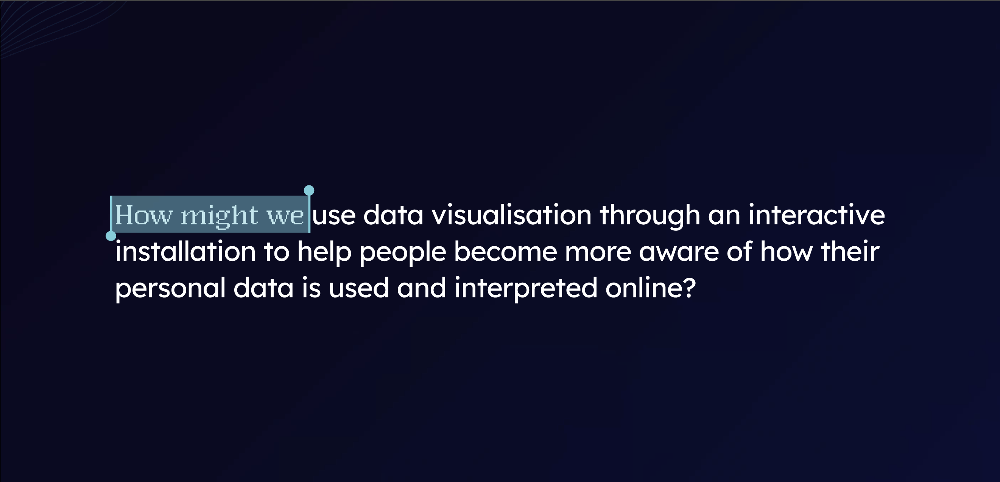
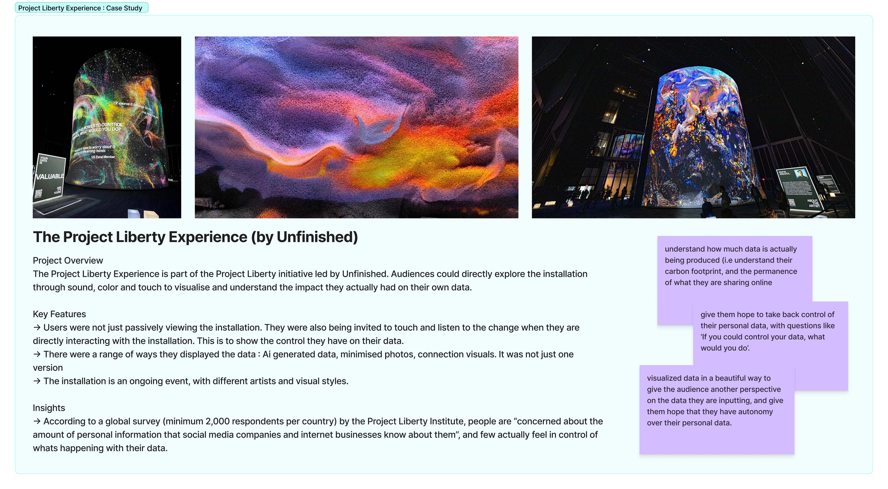
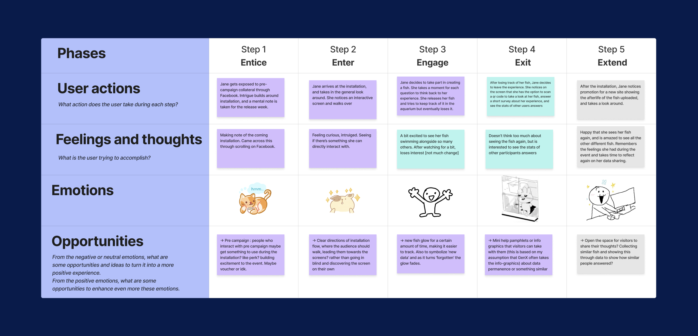
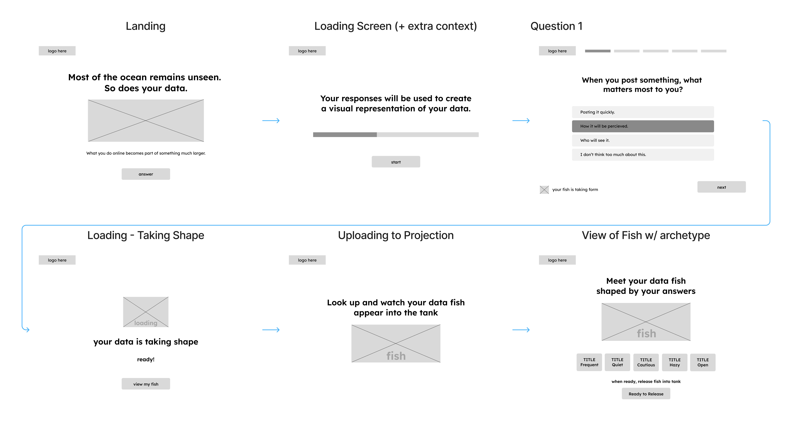
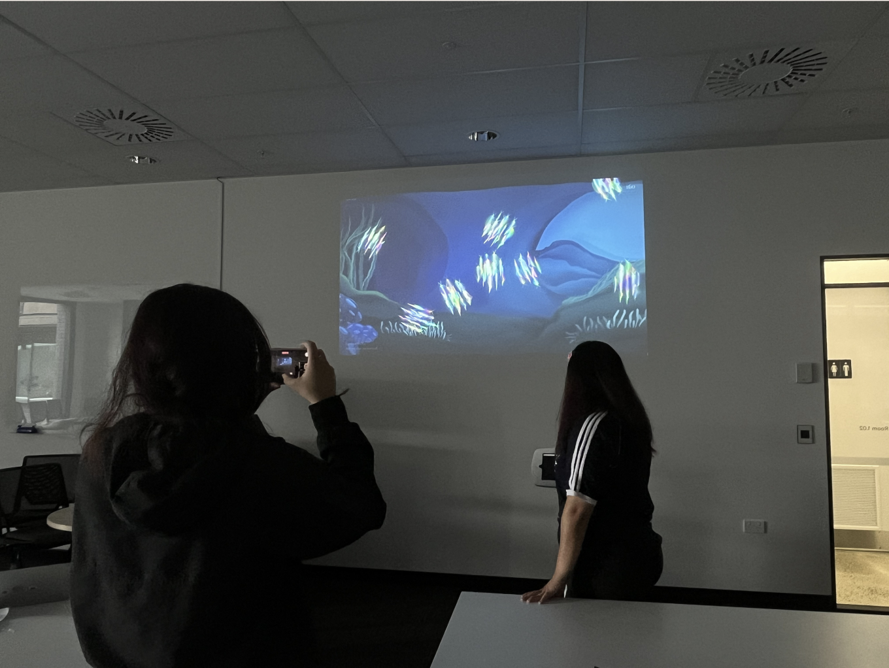
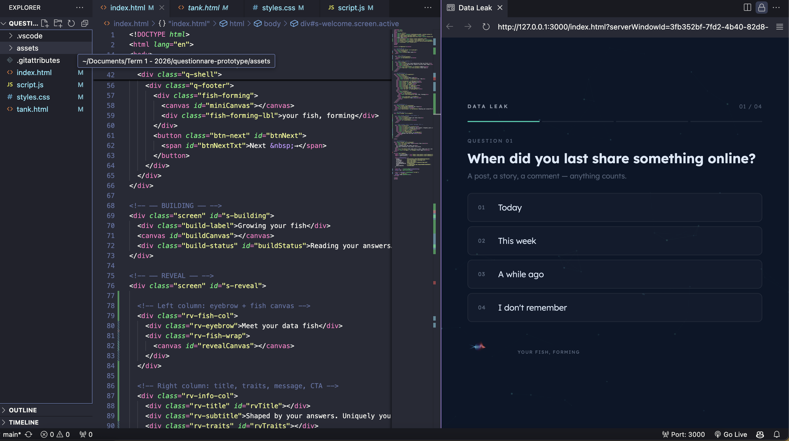

Challenge
Propose a design-led response that investigates a specific problem within the digital legacy space. Explore how design can make these systems more humane, accessible, ethical, or culturally responsive.
My Role
My role as one of the interactive designers was more focused on the backend of the project. I was responsible for creative coding and interaction development, as well as assisting with interface design.
DISCOVER
An AI’d grandma, that is. We noticed AI becoming more present in everyday apps like Google, Facebook, and Instagram. Inspired by tools like 2wai, which reconstruct and simulate human-like interactions from personal data, we started exploring how AI interprets and reshapes information behind the scenes. While this can feel seamless on the surface, we found there’s an underlying discomfort in how much is being processed and inferred without users really seeing or recognising it.

DEFINE
We took a lot of inspiration from this case study, taking what we learned and opportunities we could use.

The choice to use the fish metaphor was made to attract attention without outright scaring or overwhelming our audience on the subject of online data, so instead we aim to bring in attention with a visually engaging aquatic theme, to make it easier to understand.
CLARIFY

Our other interactive designer, Mhayvine, worked on developing the experience and campaign/installation touchpoints.


CONCEPTUALISE

Coding, then using the motion piece to apply to background for the environment

Advanced prototyping

3D mockup in-situ in Silo Park
OUTCOME
I coded and created the wireframes + the fish and the interaction, in charge of the backend and functions of the experience and then we did a mockup in-situ prototype of the installation interaction.

We also took photos in situ.


REFLECTION
This project was a great learning experience for me in terms of working with a team and navigating the challenges that come with it. I learned the importance of communication and collaboration, and how to effectively manage my time and resources to meet project deadlines. I also gained valuable experience in the design process, from research and ideation to prototyping and testing. I loved working with them, and felt so comfortable sharing my ideas and code, and asking for help when I needed it. I also appreciated the opportunity to learn from their expertise in areas like frontend development and design, which helped me grow as a developer and designer. Overall, this project was a great opportunity for me to develop my skills and work with a talented team, and I'm grateful for the experience.